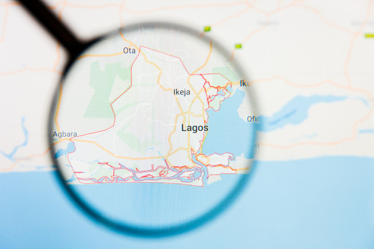

The ALPhA study explores ways that public space is being used for physical activity (exercise) in Lagos, Nigeria and Yaoundé, Cameroon. Over 2 years, the project aims to understand the types of ALPhA spaces that exist, the experiences of people who use these ALPhA spaces, and air pollution, safety and injury risks. The interdisciplinary team members come from across several fields including urban planning, public health, chemistry, engineering…
>Africa is experiencing rapid urbanisation alongside poorly governed infrastructure development and increasing unhealthy living. These factors contribute to an increased burden of non-communicable diseases (NCDs) like obesity, diabetes and heart disease. These NCDs also contribute to premature death disproportionately affecting the economically active and jeopardising development. The built environment is a critical determinant of physical activity, a risk factor for NCDs, but due to unmet need for the necessary infrastructure for exercise, public spaces in African cities are increasingly informally used for exercise, sometimes under hazardous conditions such as toxic air pollution. As a result of a lack of surveillance data, the health risks of exercise in public spaces are unknown.
Oni et al. is an urban health practice, designing health into cities. We work as technical partners on boundary-spanning science-informed solutions that integrate health into urban systems and environments. We also offer advisory and speaking services, shaping norms to health-proof the future of cities globally.
a data-driven approach to developing context-aware public health messaging to reduce disease vulnerability and improve COVID-19 control.
The COVID-19 pandemic has required lockdown measures that influence leisure physical activity (LPA) in many African cities also experiencing an obesity pandemic, a risk factor for adverse COVID-19 outcomes. Despite lockdown measures, there have been reports of an outdoor LPA in Lagos, particularly in lower-income areas, where the reduction in traffic associated with lockdown measures may have reduced air pollution, injury and violence, enticing residents to defy lockdown restrictions to take advantage of these newly created safe spaces. This creates an evolving tension in public health messaging for COVID-19 control versus obesity prevention that could have implications for health inequities in the long term. We aim to conduct opinion analyses of public space LPA to explore perceptions of government lockdown restrictions (and enforcement), and the impact of these lockdown measures on the perceptions, nature and frequency of appropriation of public space for activity in Lagos. Findings will inform development of context-aware public health messaging that safely encourages physical activity in the short term and health foresight interventions to reduce co-morbidity-associated vulnerability to future health emergencies long-term.